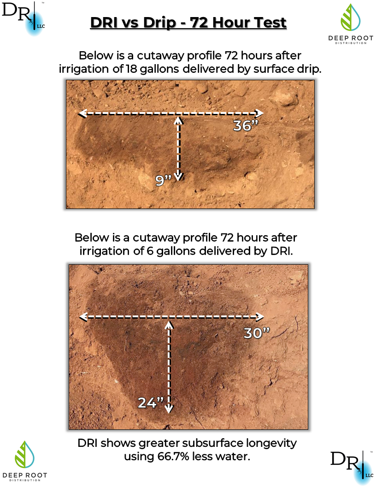

El sistema DRI (Deep Root Irrigation) consiste en una sencilla instalación subterránea que guía el agua directamente a las raíces de los árboles. Esto evita la evaporación superficial, la escorrentía y el desperdicio de agua común en métodos tradicionales.

Este sistema es fácil de instalar, de bajo costo, y con resultados visibles en pocas semanas. Es una solución tangible para ciudades con clima seco como Hermosillo.